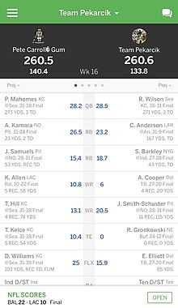

What is fantasy football?
Fantasy football is a game in which the participants serve as owners and general managers of virtual professional American football teams. The competitors select their rosters by participating in a draft in which all relevant National Football League (NFL) players are available. Fantasy points are awarded in weekly matchups based on the actual performances of football players in real-world competition. The game typically involves the NFL, but can also involve other leagues, such as the Canadian Football League or NCAA.
There are three main types of fantasy football:
- Traditional - Leagues in which the competition can run for an entire season, normally culminating in playoffs.
- Keeper or dynasty leagues - These leagues are initially drafted in the same fashion as a traditional season-long league, however, each team in a keeper league is able to retain a certain number of players from one year to the next,[1] and in a dynasty league, each team retains all players who have not retired. All subsequent drafts solely involve rookie players who are joining the NFL for the first time.
- Daily - Daily fantasy sports are accelerated versions of the traditional fantasy format in which contests are conducted over shorter periods, such as a week or a single day. Online daily fantasy football is typically managed by companies running widespread betting pools that can involve thousands of players. In the United States, the two largest daily fantasy firms are DraftKings and FanDuel.
Fantasy football is often played in small groups of mutually familiar individuals who may or may not be playing for money. However, online fantasy contests, particularly those run by daily fantasy companies, regularly involve large groups of people who otherwise do not know each other contributing to a shared betting pool. The structure of these games has led some jurisdictions to characterize and regulate online fantasy contents as a form of gambling.